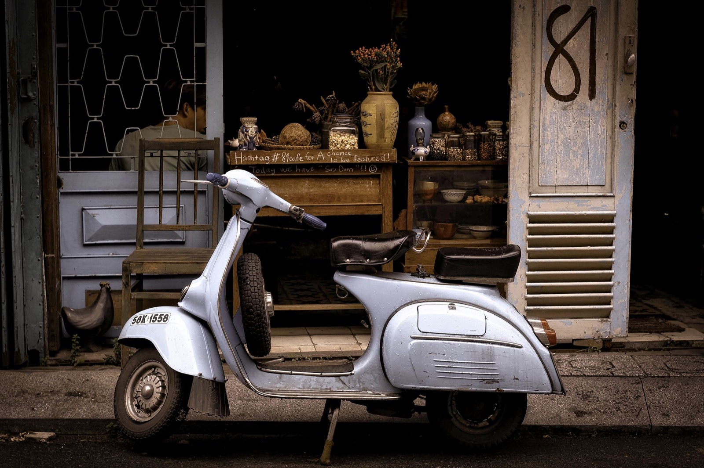
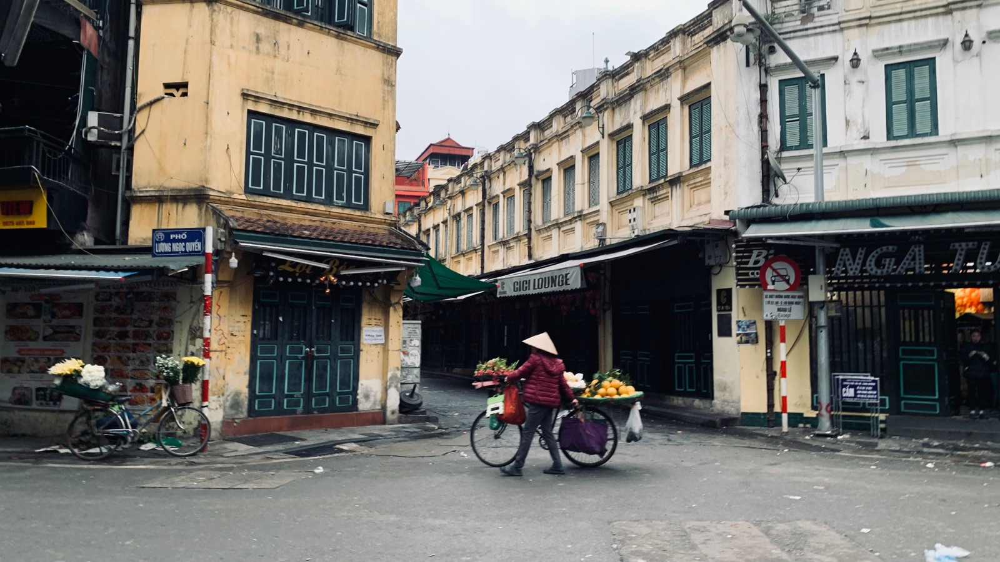

Как оставить байк на месяц: хранение во Вьетнаме

Если оставить байк под дождём и солнцем на несколько недель, возвращение может начаться с разряженного аккумулятора, мягких шин и окислившихся контактов. Правильное хранение начинается не с чехла, а с сухого безопасного места.
Где оставить байк
Лучший вариант — крытая охраняемая парковка без прямого солнца и подтопления. Уточни режим доступа, стоимость, ответственность стоянки и правила по ключам. Сфотографируй байк, номер, место и парковочный талон.

Подготовка перед отъездом
- вымой байк и дай ему полностью высохнуть;
- проверь давление в шинах по данным модели;
- убери продукты, документы и ценности из багажника;
- заправься и следуй рекомендациям производителя для срока хранения;
- смажь замки и подвижные точки, если это предусмотрено обслуживанием;
- заблокируй руль и используй дополнительный замок.
Аккумулятор
За несколько недель слабый аккумулятор может разрядиться. Для длительного хранения лучше обсудить с мастером отключение клеммы или использование подходящего поддерживающего зарядного устройства. Не проси знакомого просто заводить байк на две минуты: короткий холостой запуск не всегда восполняет заряд и добавляет конденсат.
Чехол и влажность
Чехол должен быть чистым, подходящего размера и не удерживать воду внутри. На улице он не заменяет навес и может тереть пластик на ветру. В сезон дождей особенно важны вентиляция и отсутствие воды под колёсами.
Нужно ли просить кого-то ездить
Если человек уверенно управляет байком и у него есть разрешение, периодическая полноценная поездка может быть полезнее короткого запуска. Но передавать ключи стоит только тому, кому доверяешь; заранее оговори парковку, топливо и действия при неисправности.
После возвращения
- Осмотри пол под байком на предмет подтёков.
- Проверь шины, тормоза, свет и уровень топлива.
- Запусти мотор и дай ему стабилизироваться без резкого газа.
- Сделай короткую спокойную поездку рядом с парковкой.
- Если запуск тяжёлый или появились посторонние звуки, обратись в сервис.
Общий список регулярных работ есть в статье об уходе за байком в жарком климате, а правила выбора стоянки — в материале про парковку в Нячанге.
Коротко
Крытая охраняемая стоянка, сухой чистый байк, проверенные шины и план для аккумулятора — основа спокойного возвращения после месяца отсутствия.